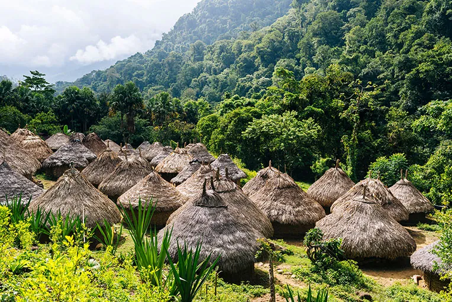

Minca · Colombia
Minca is niet alleen watervallen — het is ook een uitvalsbasis voor diepere verkenning van de Sierra Nevada de Santa Marta, het hoogste kustgebergte ter wereld. Een tocht omhoog door de cloud forests onthult koffieplantages, cacao-fincas, adembenemende uitzichten over de Caribische kust en een ongelooflijk rijke vogelwereld.
Minca staat bekend als een van de beste vogelobservatie-bestemmingen van Colombia — met meer dan 150 vogelsoorten in een klein gebied, waaronder kleurrijke kolibries, toekan-soorten en zelfs de Santa Marta endemische soorten die nergens anders voorkomen. Een gecertificeerde gids maakt het verschil.

Minca They save some for coffee in their on-site bistro. Swimming Pozo Azul and the Cascadas de Marinka are two popular natural swimming pools. The latter has a small entrance fee, but fewer crowds, a cafe and giant nets for lounging. Bird-watching Jungle Joe Minca takes groups on three-hour birding tours daily at 6am. Alternatively, birding haven Reserva Natural El Dorado has sweeping views from the San Lorenzo ridge.
A awaits with its cool climate, hundreds of exotic bird species and yoga classes – it’s rapidly becoming one of Colombia’s most popular backpacker hangouts. Located at the beginning of Colombia’s “coffee zone”, Minca is a welcome respite from the heat of the coast, though there’s not much to see in the town itself, a small settlement of around five hundred inhabitants.
• Voor vogelkijken: start voor zonsopgang — het eerste uur na zonsopgang is het actiefst
• Huur een lokale gids — ze kennen de beste plekken en de namen van alle vogels
• De koffie-finca bezoeken rondt het Minca-verhaal af (koffie + zee-uitzicht + jungle)
• Breng een lichte regenjas mee — in de hogere lagen van de Sierra is het bewolkter
• Minca heeft goede guesthouses voor een rustige nacht in de natuur — een aanrader